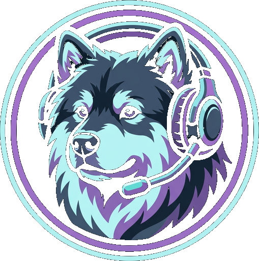
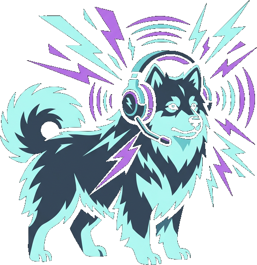
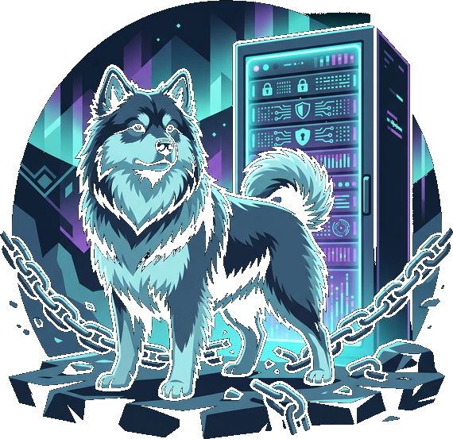
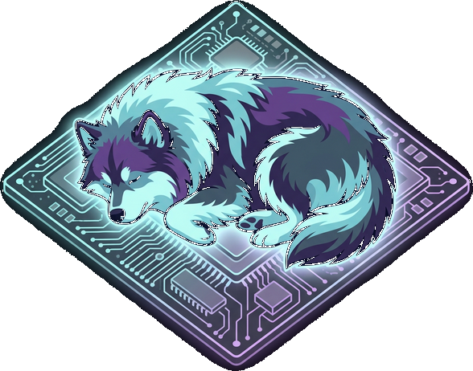
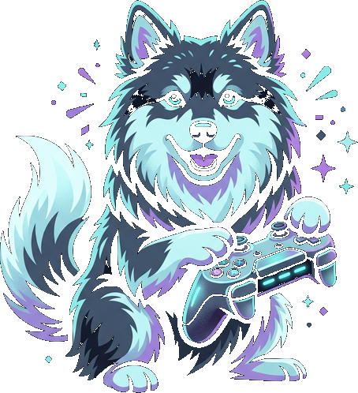
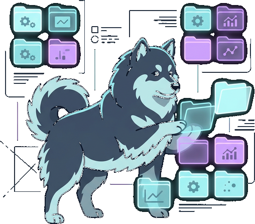
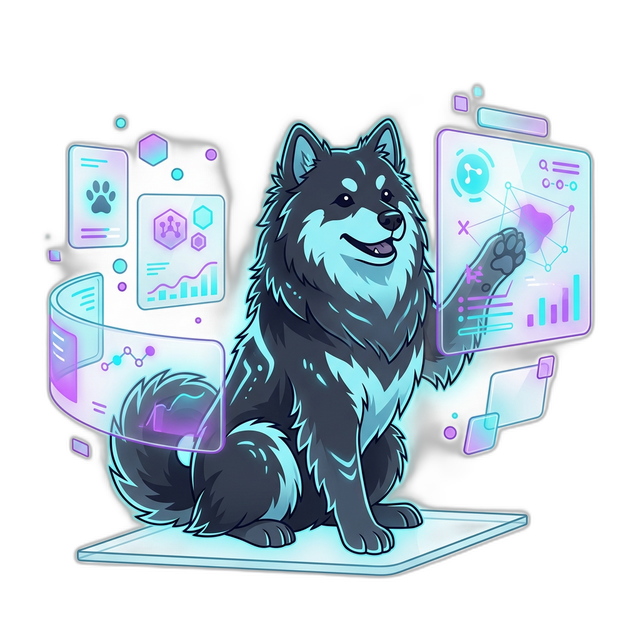
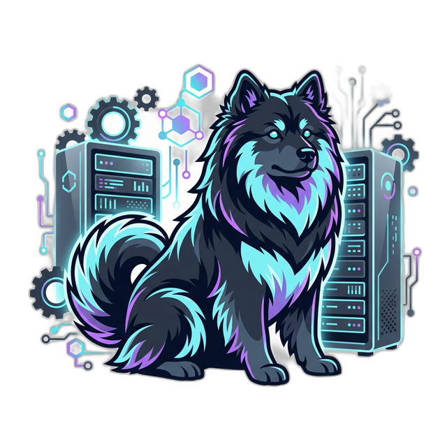
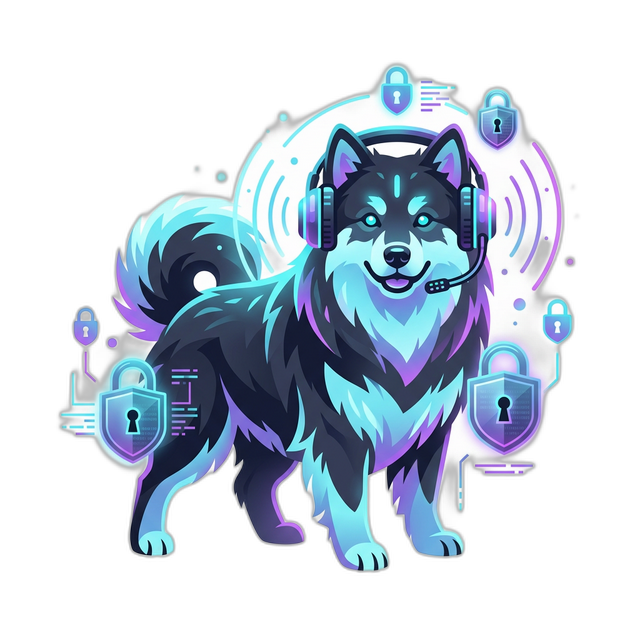
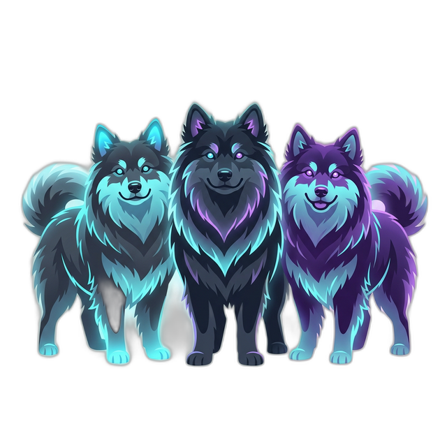

Kaiku is a free, self-hosted voice and text chat built for gaming. No tracking, no ads, no surprise changes to features you depend on. Just fast, encrypted communication that you control.

Built to be fast, private, and out of your way.

Your callouts land when they need to, not a second later. Low-latency audio that keeps up with your game.

Host it yourself. Your messages and calls are end-to-end encrypted. Nobody reads your conversations — not even us.

Built in Rust, so it barely touches your CPU or RAM. Your games get the resources, not your chat app.

Automatically shows what you and your friends are playing. No manual setup needed.
Share your screen or game with multiple streams at once. Great for strategy talk or just hanging out.

Pin your favorite channels across different communities into one place. Quick access to the stuff you actually use.
The tech behind Kaiku — and what it means for you.

A reactive UI framework that keeps things snappy. No lag when you scroll, switch channels, or open menus — even on older hardware.

The app runs natively on your system instead of inside a browser. That means less RAM, less CPU, and no Electron bloat slowing down your games.

Industry-standard real-time audio paired with end-to-end encryption. Your voice gets there fast, and nobody can listen in.

Kaiku is still in development and not ready for release yet. If you like what you see, star us on GitHub and check back soon — we're building this in the open.
Follow our progress on GitHub.